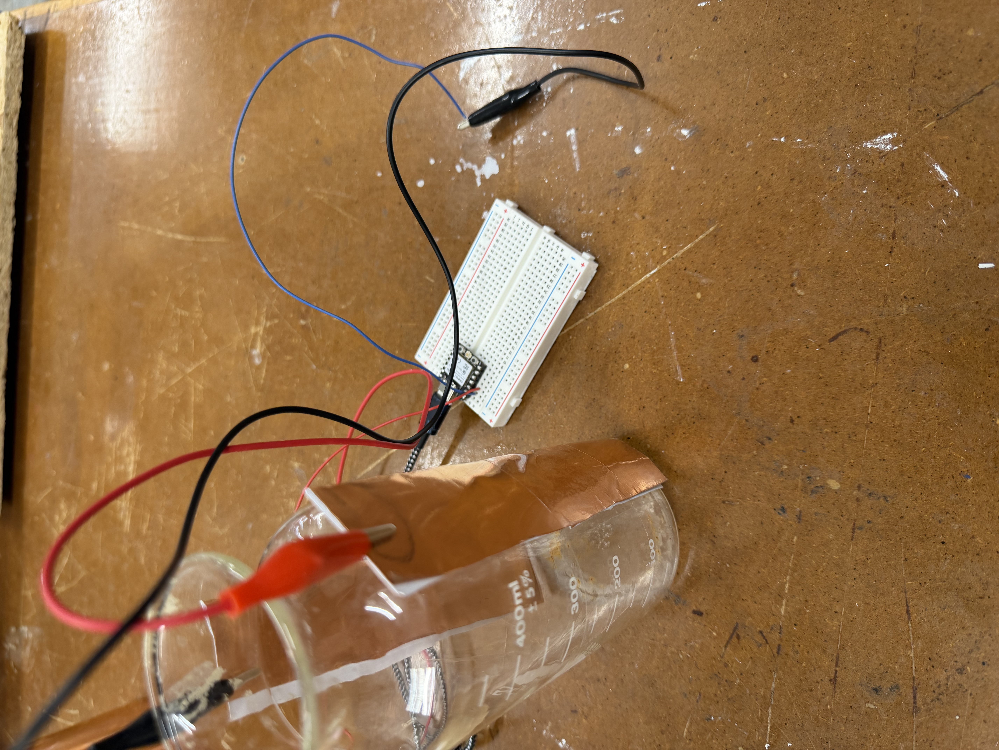
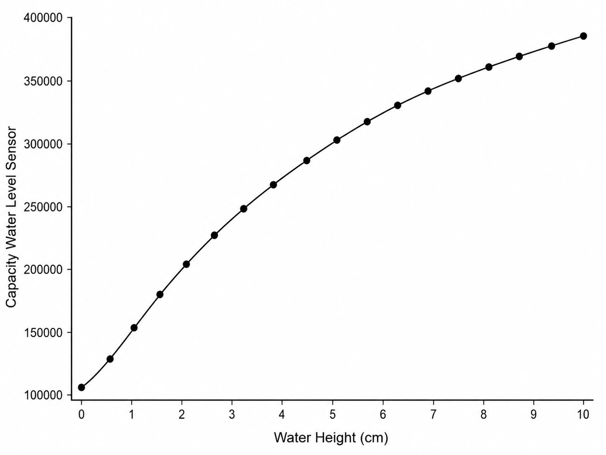
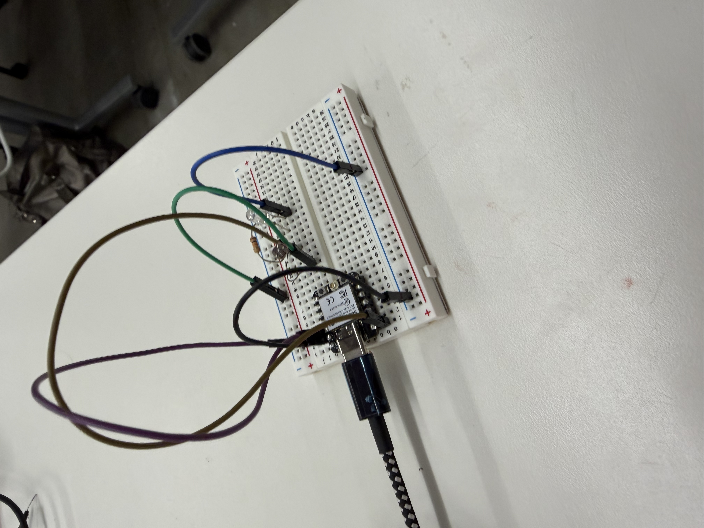

<div class="textcontainer">
<p class="margin"> </p>
<h3>Week 6: Electronic Inputs</h3>
<h4>Assignment 1: Capacitive Sensor</h4>
<h4>Assignment 2: Use + Calibrate Another Sensor</h4>
<section>
<p>
For this week’s assignment, I decided to build a capacitive water level sensor with copper touch pads. I first set up my circuit and connected two copper pads onto a glass that served as the sensing element. I attached the copper strips vertically to the outside of the glass so that the sensor could detect changes in the water level without the copper directly touching the water. As the water level increased, the capacitance around the copper pads changed and increased because the water affects the electric field around the sensor. In Arduino, I could then see different sensor values depending on how high the water was in the glass. To calibrate the sensor, I filled the glass slowly and noted the values from the serial monitor at different water heights to compare the sensor values to the actual water level.
</p>
<p>
Below, you can see a graph of the water level and the capacitive water level sensor readings.
</p>
<p></p>
<br><br>
<p></p>
<br><br>
<p>
For the additional sensor, I first tried to work on my flower design and build copper pads into the flowers so that when touching the copper pad with another piece of copper, the flower would open. However, that turned out to be very tricky and not very reliable, so instead I decided to build a circuit with an LDR, or Light Dependent Resistor, and an LED. At first, I just read the sensor values in Arduino to benchmark a value in the code where the LED should be turned on versus turned off. When the light was off, the numbers were very low, and when the light was on, especially when I held my flashlight on it, the values became very high. That way I could calibrate my code. So when I put a hat over the sensor, the LED turned on, and then when it was exposed to light again, the LED turned off.
</p>
<h4>Arduino Code</h4>
<pre style="background: transparent; color: black; font-size:14px; line-height:1.4; border:none; padding:0; margin:0;">
<code style="background: transparent; color: black;">
#include &lt;ESP32Servo.h&gt;
const int ldrPin = A0;
const int ledPin = D0;
int sensorValue = 0;
int threshold = 1500;
void setup() {
pinMode(ledPin, OUTPUT);
Serial.begin(115200);
}
void loop() {
sensorValue = analogRead(ldrPin);
Serial.println(sensorValue);
if(sensorValue < threshold) {
digitalWrite(ledPin, HIGH);
}
else {
digitalWrite(ledPin, LOW);
}
delay(100);
}
</code>
</pre>
<p></p>
<br><br>
<video controls width="400">
<source src="sesorvid.mp4" type="video/mp4">
Your browser does not support the video tag.
</video>
</section>
</div>